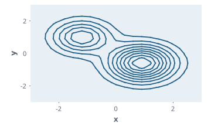

Every chart type in one place – the applications only supply data
Function overview for the presentation of the envisionz framework, as of 28 Sep 2026. Lines, grid and triangle contours
with isolines, colour scales, markers and envelopes, the chart factories from bar chart to Joule diagram, the 3D factories on the
own rendering engine, and SVG export. For each method: purpose, API, use in the framework, applications, examples.
The examples are shortened.
Some API names are German (e.g. Huellkurve = envelope, Datenbruecke = data bridge, einrasten = snap, Farbtafel = colour map); they are shown unchanged.

ContourChartFactory and written as SVG by SvgExport: isolines of a field with two hills.Principles of the module
BufferedImage and measure on the image.Chart3DView from framework-chart3d instead of Orson Charts; the factory calls stayed the same.Lines, axes, basics envisionz.chart · .line · .series
LineChart, LinePlot, XySeriesData, AngledNumberAxis
The line chart with linear or logarithmic axis, lines, points or area, and a second Y axis on the right. XySeriesData is the neutral data series. AngledNumberAxis rotates the tick labels of the colour bar by 0 to 90 degrees and reserves the space needed.
Methods
new LinePlot(xName, yName, AxisScale.LINEAR|LOG, XyStyle),setData(reihen)setSecondaryData(yName, skala, reihen),hasSecondaryAxis()new LineChart(plot, titel, legende);AbstractChart: legend position, font, paddingnew XySeriesData(name, x, y[, farbe]);XyStyle:LINE,POINTS,LINE_POINTS,AREA
Used in
What for
Characteristic curves, time histories, Tad curves, digitised curves for comparison.
Example – how app-thermo builds the Tad curve
LinePlot plot = new LinePlot("Äquivalenzverhältnis φ [-]", "T_ad [K]", AxisScale.LINEAR, XyStyle.LINE);
LineChart chart = new LineChart(plot, "Tad(φ)", true);
plot.setData(List.of(new XySeriesData("A2", phi, tad)));Colour scales envisionz.chart.color
Colormap, ColormapPaintScale, ColormapColorScale, ContourScale
Five colour maps, continuous or banded, reversible; a value just outside 0..1 is clamped so that no colour appears that is missing from the legend. ColormapPaintScale is the PaintScale for JFreeChart and remembers whether the limits came from the user; ColormapColorScale is the same scale for the 3D engine. Background, formulas and pseudocode →
Methods
Colormap.JET,VIRIDIS,TURBO,GRAYSCALE,COOLWARM;at(t)new ColormapPaintScale(tafel, unten, oben, umgekehrt, baender[, …, benutzerBereich]),getPaint(v),bandColor(i, n)new ColormapColorScale(tafel, lo, hi, umgekehrt[, baender])ContourScale.applyScale(chart, skala),currentScale,setContourVisible,setLegendTickUnit
Used in
What for
Uniform colouring of contours, scatter points and 3D surfaces across all applications.
Example – Viridis in twelve bands
PaintScale s = new ColormapPaintScale(Colormap.VIRIDIS, fMin, fMax, false, 12);
ContourScale.applyScale(chart, s);Contours on the grid envisionz.chart.contour · envisionz.chart.plot
ContourChartFactory, ContourDataset, ContourRenderer, ContourLayers
Layered chart after the pattern of ENVISIONZ-2020: fill, mesh and isolines in separate layers, plus the colour bar. Cells are filled bilinearly or in discrete bands with Sutherland-Hodgman clipping. ContourDataset holds the structured grid and refines it bilinearly; ContourLayers provides mesh and isoline datasets, also for app-maps. Many switches act on the live chart. Background, formulas and pseudocode →
Methods
ContourChartFactory.create(ds, titel, xLabel, yLabel, skala, optionen);ContourOptions.defaults()setGrid,setAxisGrid,setIsoBands(chart, an, baender),setContourVisible,applyScale,fieldRangenew ContourDataset(x, y, z, nI, nJ),refine(ds, faktor),zMin(),zMax()ContourLayers.gridDataset(ds),isoDataset(ds, n),levelSegments(ds, niveau)
Used in
What for
Maps and flow fields on structured grids, results of the CFD solver.
Example – contour chart from a grid
ContourDataset ds = new ContourDataset(x, y, z, nI, nJ);
PaintScale s = new ColormapPaintScale(Colormap.VIRIDIS, ds.zMin(), ds.zMax(), false, 0);
JFreeChart chart = ContourChartFactory.create(ds, "Wirkungsgrad", "W2 [kg/s]", "PR [-]", s, ContourOptions.defaults());IsoLines, IsoPolyline, IsoCurveLabel, IsoLegend, ContourPoints
Isolines in several layers with their own colour, line style and labels, the line opened at the label. IsoPolyline chains unordered marching-squares segments into polylines and snaps corner values that lie within 1e-12 of the iso value – otherwise isolines on mesh edges broke into pieces. Labels compute their rotation at draw time. Plus scatter points labelled at nine anchor positions and a legend of their own.
Methods
IsoLines.levels(lo, hi, absDelta, delta, anzahl),bandLevels(lo, hi, baender)IsoLines.apply(chart[, ebene], niveaus, stil),remove,defaultStyle(),splitAtGapIsoPolyline.chain(segmente),labelAnchor(linie),einrasten(f, niveau)ContourPoints.apply(chart, daten, fehler, stil);IsoLegend.apply(chart, eintraege[, lage])
Used in
What for
Efficiency islands and speed lines in maps, labelled and legible at any zoom.
Example – ten isolines on layer 0
double[] niveaus = IsoLines.levels(lo, hi, false, 0, 10);
IsoLines.apply(chart, niveaus, IsoLines.defaultStyle());Contours on triangle meshes envisionz.chart.tri
TriChartFactory, TriContourRenderer, TriIsoLines, TriDataset
The same contours for scattered points, on the triangle mesh from framework-data. Each band in the colour of its lower limit, edges switchable, NaN nodes caught. The value range is formed only over points that a triangle uses – otherwise two detached points made up 91 % of the scale. Background, formulas and pseudocode →
Methods
TriChartFactory.create(x, y, f, tris, titel, xLabel, yLabel, niveaus, iso, kanten)and further overloadsbereichBenutzt(f, tris),setGrid,setBandLevels,applyScale,meshX/Y/F/Tris(chart)TriIsoLines.apply(chart, ebene, x, y, f, tris, …),remove
Used in
What for
Contours from measurement clouds and maps without a grid, with the boundary the boundary method leaves.
Example – mesh from framework-data, contour here
TriMesh m = Triangulierverfahren.erzeuge("BOWYER_WATSON").triangulate(x, y, f);
JFreeChart c = TriChartFactory.create(m.x, m.y, m.f, m.tris, "Messwolke", "x", "y", 12, true, false);Markers, annotations, envelopes envisionz.chart.deco
ChartDecorations – markers and annotations
Value markers and interval bands on both axes, pointers with text, multi-line text annotations and polygons. The opacity of a band sits in the colour channel so that label and outline stay fully opaque.
Methods
addValueMarker(chart, achse, wert, farbe, breite, text)addIntervalMarker(chart, achse, von, bis, farbe, deckkraft, text[, …])addPointer(...),addTextAnnotation(...),addPolygon(chart, xy, …),clearAll(chart)
Used in
What for
Entering operating limits, design points and certified ranges into a chart.
Example – limit and range
ChartDecorations.addValueMarker(chart, ChartDecorations.Axis.DOMAIN, 1.05, Color.RED, 1.5f, "N_max");
ChartDecorations.addIntervalMarker(chart, ChartDecorations.Axis.RANGE, 2.0, 2.4, Color.GRAY, 0.3f, "Pumpreserve");EnvelopeOverlay, Huellkurve, Huellkurvenschicht, HuellkurvenXml
Envelopes in the 2020 format (;-separated) are read and drawn as one annotation for the whole envelope; open lines stay open, areas start at 25 % opacity. The model carries per element colour, width, line style, fill and labels. It is saved in the own XML format .hkx; the old file remains an import. Text anchors are resolved through an explicit list, not by reflection.
Methods
EnvelopeOverlay.parse(datei)→List<Item>,apply(chart, datei|items)→HuellkurvenschichtHuellkurve.aus(quelle, items),elemente,kopie();Strich:DURCHGEZOGEN,GESTRICHELT,GEPUNKTET,KEINERHuellkurvenschicht.zeige(chart, modell),finde(chart),entferne(chart)HuellkurvenXml.lade(datei),schreibe(h, datei),istHkx(datei)
Used in
What for
Laying flight envelopes, surge lines and certification limits over maps and performance charts.
Example – load and show an envelope, as the card does
Huellkurve m = HuellkurvenXml.lade(datei);
Huellkurvenschicht.zeige(chart, m); // replaces, never duplicatesChart factories bar · pie · radar · polar · stats · time · ohlc · wind · gantt · joule
The ENVISIONZ-2020 chart set, rebuilt neutrally
Each factory takes a title, labels and number arrays and returns a JFreeChart; which columns come from where is decided by the application. Empty columns, all-equal values, NaN and negative radii are caught and counted instead of producing an exception or an invisible chart.
| Factory | Chart | Particulars |
|---|---|---|
BarChartFactory | Bars, stacked, waterfall | create(…, kategorien, reihen, gestapelt), createWaterfall |
PieChartFactory | Pie, ring | create(titel, kategorien, werte, ring) |
RadarChartFactory, PolarChartFactory | Spider, polar | Polar: negative radius plotted opposite, angle to 0..360 |
HistogramChartFactory, BoxWhiskerChartFactory, BubbleChartFactory | Statistics | empty → subtitle “no values”, all equal → one bin ± 0.5 |
TimeSeriesFactory, CandlestickFactory, WindFactory, GanttFactory | Time series, OHLC, wind, Gantt | Time series: time in milliseconds, value axis optionally logarithmic |
JouleChartFactory | T-s diagram (Joule/Brayton) | several Cycles, dashed isobars, station labels; the caller computes the entropy |
Used in
What for
Evaluations, statistics over measurement series, cycles in the T-s diagram, schedules.
Example – histogram with 20 bins
JFreeChart h = HistogramChartFactory.create("Streuung T30", "T30 [K]", "Messung", werte, 20);3D factories and the bridge to chart3d envisionz.chart.threed · envisionz.chart.jfree
Scatter3DFactory, Surface3DFactory, Volume3DFactory, Line3DFactory, CategoryChart3DFactory, Pie3DFactory
The factories with the same calls as in the days of Orson Charts, but drawn by the own engine in framework-chart3d; they return a Chart3DView. Colours come from this module's colour maps via ColormapColorScale. The volume factory takes ready-made triangles, such as iso-surfaces from framework-data.
Methods
Scatter3DFactory.create(x, y, z, farbwerte, titel, xL, yL, zL, tafel, umgekehrt)Surface3DFactory.create(xv, yv, gitterZ, nI, nJ, zMin, zMax, titel, …, tafel, umgekehrt)Volume3DFactory.create(tris, farben, xMin, xMax, …, titel, …),Line3DFactory.create(...)CategoryChart3DFactory.create(...)(bars, area),Pie3DFactory.create(titel, kategorien, werte)
Used in
What for
Maps as surfaces, measurement clouds in space, iso-surfaces, 3D bars and pies.
Example – scatter in space, coloured by f
Chart3DView v = Scatter3DFactory.create(x, y, z, f, "Messpunkte", "W2", "PR", "N", Colormap.VIRIDIS, false);
BufferedImage bild = v.render(800, 600);Datenbruecke – chart3d data sources and JFreeChart datasets
A map f(x, y, z) becomes a family of characteristic curves by holding one quantity fixed; a carpet plot is two such families, the second shifted against the first. In the other direction, XY datasets are staggered one behind the other in space. Series are created without self-sorting so that curves running backwards survive. The bridge lives here because chart3d is to have no foreign dependency.
Methods
scharUeberX(gitterquelle, format),scharUeberY(...),teppich(q, scherung, …)schnitte(punktquelle, fest, stellen, …),alsXYZ(...),hintereinander(...),alsBahnen(ds, z)
Used in
What for
Carpet plots and curve families from the same data that feed the spatial surface.
SVG export and tools envisionz.chart.export · cmd.chart
SvgExport, Abloesungslauf, Brueckenlauf, Isoflaechenlauf
SvgExport writes a chart via JFreeSVG, whether version 3 or 4/5 is on the class path. The three runners under cmd.chart are image runs, not probes: they draw all six 3D factories, the data bridge in both directions and iso-surfaces of spherical shells whose radius is recomputed.
Methods
SvgExport.available(),SvgExport.write(chart, datei, breite, hoehe)Abloesungslauf.lauf([zielverzeichnis]),Brueckenlauf.lauf(...),Isoflaechenlauf.lauf(...)– return value as result
Used in
What for
Vector graphics for reports and presentations; visual checks of the drawing paths.
Example – save as SVG
if (SvgExport.available()) SvgExport.write(chart, Path.of("kennfeld.svg"), 1200, 800);Usage matrix in the framework
Which modules use which parts today, counted in the source code (excluding probes).
| Module | Line / basics | Colour scales | Grid contour | Triangle contour | Markers / envelopes | Factories | 3D | SVG | What for |
|---|---|---|---|---|---|---|---|---|---|
| app-charts | ● | ● | ● | ● | ● | ● | ● | ● | All chart types from CSV, H2 and Tecplot |
| app-maps | ● | ● | ● | ● | ● | Maps, isolines, spatial view | |||
| app-acft | ● | ● | ● | ● | Flight performance charts | ||||
| app-machieve | ● | ● | CFD solver results in 2D | ||||||
| app-thermo | ● | Property and Tad curves | |||||||
| app-digitizer | ● | Displaying digitised curves |
envisionz.chart.contour, and the marching-squares cell of app-maps is an adapter to ContourLayers.levelSegments. Only the Datenbruecke has no caller outside the probes.